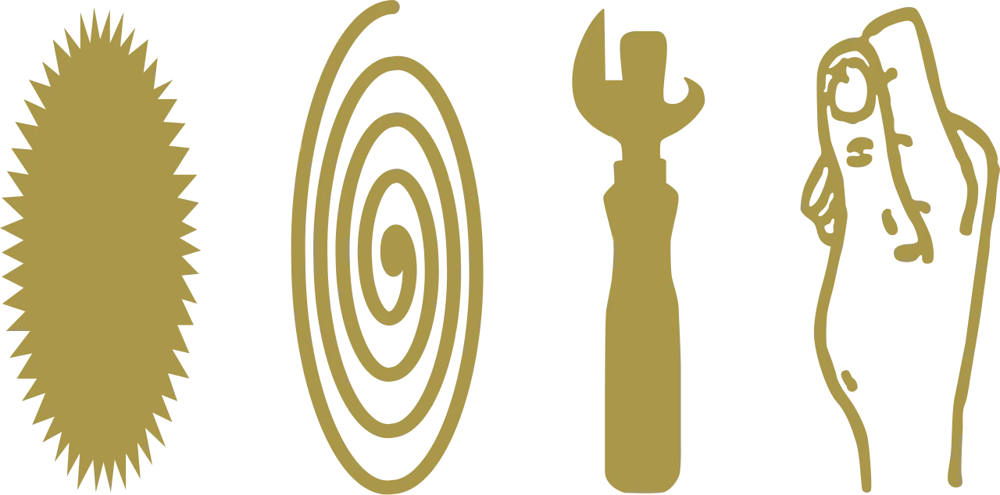
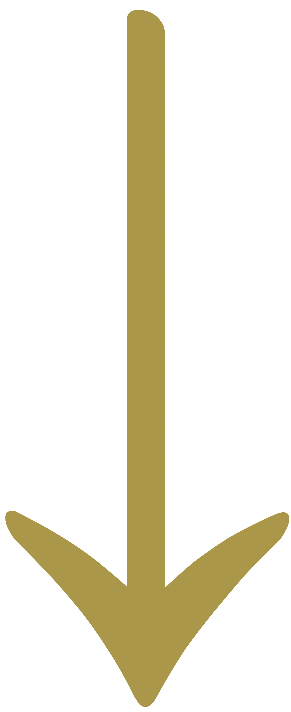

О нас
 Культурный контекст
«Жизнь коротка, искусство вечно».
Вечен и интерес к искусству, его идеям и принципам.
Манифест — письменное изложение литературных или художественных принципов, выражение мнения, содержащее программу.
Манифест, как источник информации и форма выражения творческих идей и принципов, закрыт для людей. Тексты трудны для понимания, их сложно найти без знания их существования.
Принципы
Мы стремимся, чтобы тексты стали доступны людям.
Мы хотим видеть больше концептуально проработанных проектов.
Мы считаем, что тексты, не должны ставить своей главной и единственной целью продать продукт или услугу.
Мы считаем, что чтение манифестов помогает качественно писать собственные тексты, проводить глубокие исследования интересующего культурного поля.
Идея
Наше текущее понимание культуры чтения и написания творческих текстов привело нас к созданию архива манифестов.
Консерва
Веб-сервис собирает тексты и делает доступными для людей.
Кроме того, проект стремится развить культуру осознанного подхода к аписанию поясняющих текстов, которые в перспективе помогут создавать более концептуально проработанные творческие проекты.